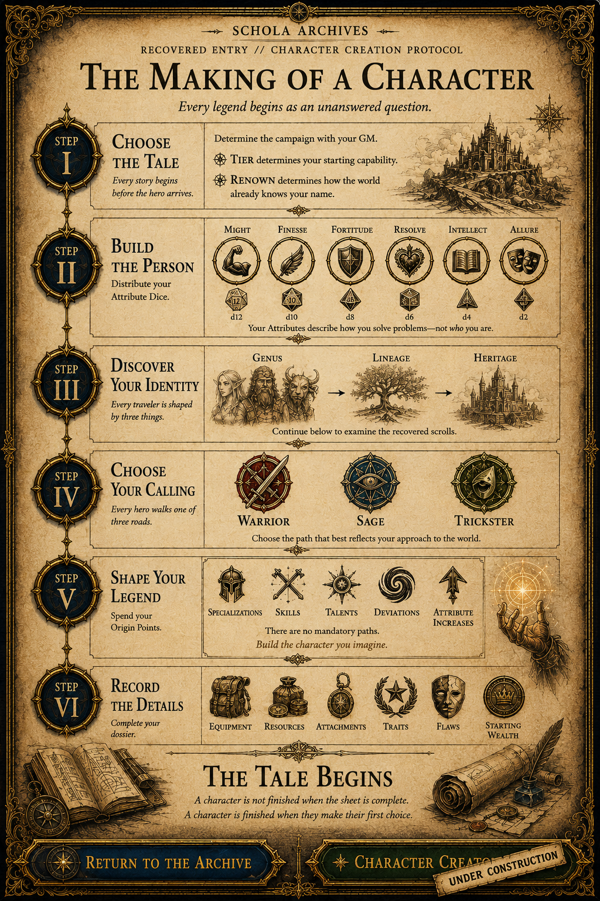
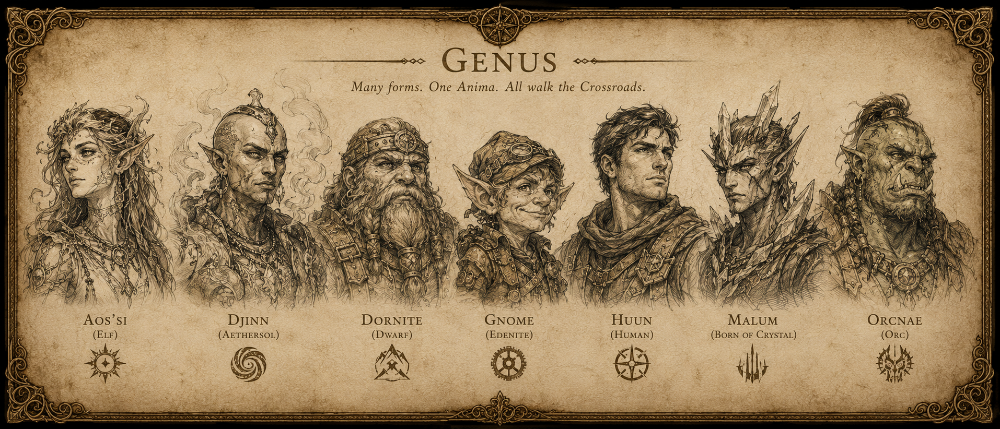
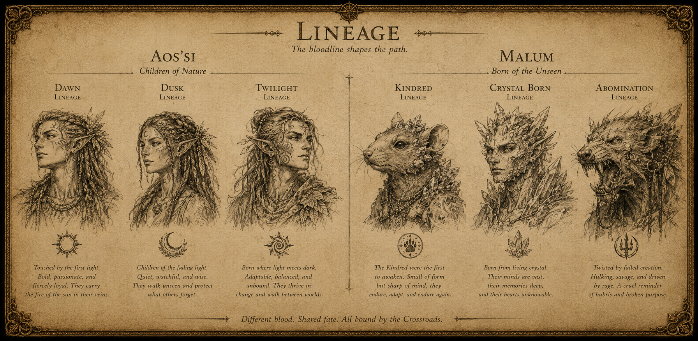
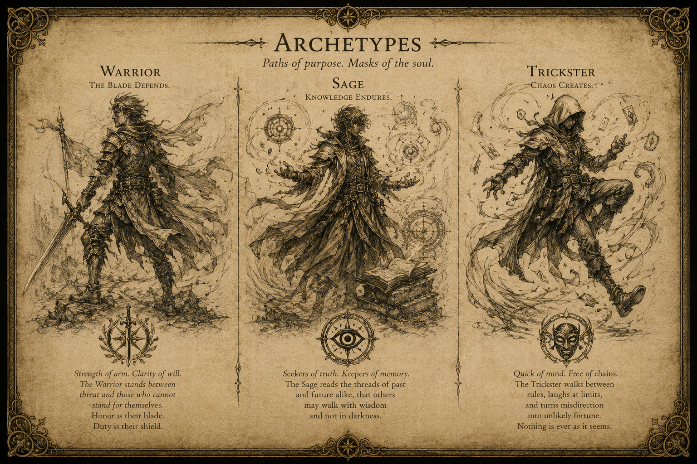
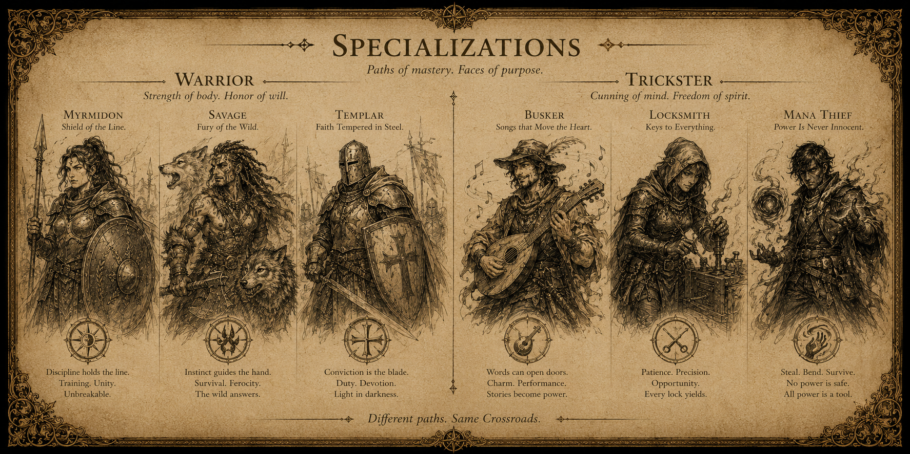
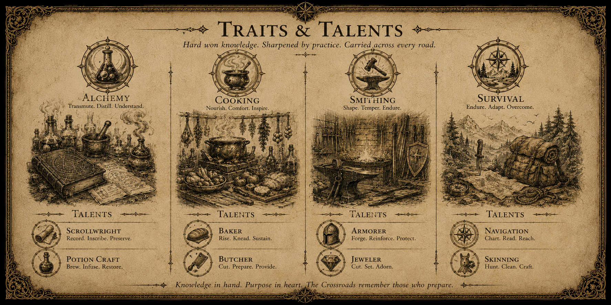

RETURN DEBUG




Featured Deviations
Deviations bend the ordinary rules of character creation and advancement. Open an entry to examine the recovered record.
Tier IBitter Warfare
You have survived savage underworld wars in narrow city streets or have grown deaf to the cacophony of steel and flesh as ordered ranks clash on the battlefield. You won’t give in to bad situations. You will, in fact, break before you bend.
You never take penalties for being outnumbered in combat. Fortune always smiles on your attacks if you or your foe are surrounded by obstacles or other combatants on at least three sides, not including the floor or the ceiling.
However, you must make a Resolve check before you may disengage from any fight.
Tier ILegacy
Some people are born for greatness. Others are born of greatness, and their deeds remain to be seen. Nevertheless, being born of greatness carries its fair share of benefits.
You are the child of someone famous and important to the history of Mani’Erin. Your actions reflect upon your ancestry, and you receive special benefits from your Legacy.
Tier IICombat Reflexes
Swordplay is like dancing, except your partner wants to trip, embarrass, and possibly kill you. Yet, if you know their tune and where you should be, you can react to their efforts as if you had foreseen it all.
Whenever you take the Dodge Action on your turn during Conflict, you may take a Reaction for each action that happens in the Conflict until the start of your next turn. You are still required to expend Resources.
Tier IIIPromise of Steel
New heights of martial prowess have been your only guiding light. You have chased ever higher peaks on the path of mastery, a path painted by the blood of your victims.
Beware. Those who live by the sword, die by the sword.
Choose a favored weapon type. Fortune smiles on all Weapon Maneuvers against targets that you have wounded.